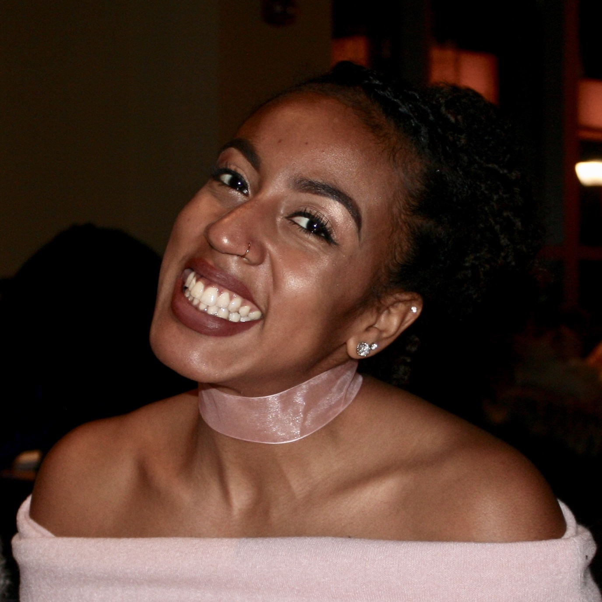

Gianna Parella
Course 10
The Committee



Come enjoy an enchanted evening with your 2017 Senior Ball Committee at A Midsummer Night’s Dream! Join us as we celebrate our upcoming graduation, and revel in the beauty of the historic Fairmont Copley Plaza Hotel. Throughout the night, enjoy a variety of gourmet dishes, live music, dancing, and plenty of photo opportunities. Senior Ball will take place from 7PM to 11PM on Saturday, May 6th, 2017. Student ID and photo ID/passport are required, and black tie attire is requested.
{insert video from Kickoff here}
Senior Ball will take place at the beautiful, historic Fairmont Copley Plaza Hotel. Arrive in style via the ornate lobby and explore the architecture of the event space, which includes the Grand Ballroom, Oval Room, and Venetian Room. The Grand Ballroom will feature a large dance floor and DJ, while the Oval and Venetian Room will be reserved for food, drinks, and live jazz music. There will also be card games available for your use, among other activities.
The hotel address is 138 St James Ave, Boston, MA 02116. Logistical details regarding entrance procedures and event rules will be announced closer to the event date.
Tickets may be purchased online or in person from March 6-10 in Lobby 10 (10am-2pm) and from March 13-14 in the Student Center (10am-2pm). We request that you purchase your tickets online, unless you cannot pay with a credit card. Ticket sales will open online at 10am on March 6.
Only members of the Class of 2017 can purchase Senior Ball tickets, using a valid MIT certificate online or by showing your Class of 2017 ID in person. You may purchase up to two (2) total tickets for yourself and a date.
1350 total tickets will be sold for this event. 800 tickets will be sold as Early Bird tickets and the remainder will be sold as Regular tickets once the Early bird tickets have sold out. Ticket sales will occur until Friday, April 21, 2017 or until we reach the venue capacity (1350). Once capacity has been reached, guests who wish to purchase tickets will be added to the waitlist, and will be notified by Friday, April 28, 2017 if they receive tickets.
Each guest can purchase up to two (2) drink tickets, which can be used for beer, wine, and liquor, as well as the specialty cocktails for the night. Note that you must be 21+ as of 5/6/2017 to use these drink tickets. Water, juice, and soda will be available free of charge (no drink tickets required). A cash bar will be available at the event, where drinks will range in price from $8-12 per drink.
Refund policy: If you do not want your ticket anymore, it will be refunded to you and given to the next person on the waitlist. The reason for this is that we want all seniors to have as fair of a chance as possible at being able to attend Senior Ball. Please see the Ticketing FAQ for more information.
adMIT One Ticketing
Your order went through if you received a confirmation/ order number. To find your order number:
When is Senior Ball?
Senior Ball will take place on Saturday, May 6th, 2017, from 7:00 pm – 11:00 pm, at the Boston Public Library.
Do I need to get a table?
There is no plated dinner, so finding a group for a table isn’t necessary. There will be many delicious hors d'oeuvres and small plates served throughout the event.
How can I get to the event?
The hotel is located at 138 St. James Ave, Boston, MA 02216, right across from Copley Square. You can take the Green Line to the Copley T Stop or walk/Uber/taxi to the event.
What should I wear?
Black-tie attire is requested. Tuxedo rentals will be available on campus, with more details to come later.
Will there be a coat check?
Yes, there will be a free coat check available.
Must I arrive with my guest?
Yes, you must arrive with them, as their ticket will be under your name. Please notify the committee at seniorball2017@mit.edu if this will be problematic.
Please see the Ticketing section for information on purchasing tickets.
Who can buy Senior Ball tickets? How many tickets can be purchased by a single student?
Only members of the Class of 2017 can purchase Senior Ball tickets, using a valid MIT certificate online or by showing your Class of 2017 ID in person. You may purchase up to two (2) total tickets: one for yourself and one for a date.
Am I guaranteed a ticket to Senior Ball if I am in the Class of 2017?No. We wanted to give people to opportunity to bring the guest of their choice, but that does mean that some of the event tickets will go to non MIT 2017’s. Our venue has a larger capacity than the venue chosen last year (1350) and we hope that, if the event does sell out, using a waitlist will provide everyone who wishes to go with the opportunity to do so.
Do I need to know my guest’s name when buying tickets? (Can I buy a guest ticket even if I don’t know who I’m bringing yet?)
No, you do not need to know who your guest will be when you are purchasing tickets.
Can I bring a non-2017 as a date (ie. An underclassman or someone from outside MIT)?
Yes! Every 2017 is allowed to bring one guest. However, if your guest is not a senior, they will not be able to purchase their own ticket!
How many tickets are available for Senior Ball?
There are 1350 total tickets that will be sold for this event. 800 tickets will be sold as Early Bird tickets and the remainder will be sold as Regular tickets once the Early bird tickets have sold out.
Where can I buy my Senior Ball tickets?
Tickets can be purchased online at MIT’s ticketing service, AdmitOne. Tickets can also be purchased in-person from March 6-10 in Lobby 13 (10am-2pm) and from March 13-14 in the Student Center (10am-2pm).
How can I pay for my Senior Ball tickets? How much do they cost?
In person: tickets can be paid for using cash or TechCash. Online: credit card or Tech Cash can be used.
Early bird tickets: $35.00 + $8.00 per drink ticket (up to 2 drink tickets per guest)
Regular tickets: $40.00 + $8.00 per drink ticket (up to 2 drink tickets per guest)
What does the price of my ticket include?
The revenue from ticket sales will assist the Senior Ball Committee in providing ample food, non-alcoholic drinks, live entertainment, photographers, and decorations for the event. It does not include the price of alcoholic beverages, which will be paid for using the revenue from drink ticket sales.
When do ticket sales close?
Ticket sales will close on Friday, April 21, 2017 at 11:59pm or until we reach the venue capacity (1350 guests).
Are tickets returnable and refundable?
Yes. If you do not want your ticket anymore, it will be refunded to you and given to the next person on the waitlist, if we are at capacity. If you decide that you no longer want your ticket, please let us know and return it as soon as possible. The sooner we can get people (especially 2017s) off of the waitlist, the better.
In the scenario that you purchase tickets for yourself and a guest, and want to return the tickets, both must be returned, unless your guest is also a member of the Class of 2017. We want to ensure that non-2017’s cannot attend without a 2017 purchasing their ticket.
The last date to return your ticket will be Friday, April 21. All individuals on the waitlist will be notified by Friday, April 28 at the latest if they are receiving a ticket.
Do I need to bring my ticket to the venue?
No! We will have a list of all ticket holders at check-in.
I have already graduated or am graduating early, can I come to Senior Ball?
Yes! We would love to have you. If you have ‘year 4’ certificates, please go ahead and purchase your tickets either online or in person. However, if you no longer have certificates or do not have the correct certificates, please email tickets@mit.edu.
I didn’t get a confirmation email – how do I know if my transaction went through?
You should have a confirmation number for your order (which you receive when you place the order) – you can view your tickets through the adMIT One website with that confirmation number. If you have a confirmation number, your transaction went through. If your bank account has been charged but you do not have a confirmation number, please email us.
**You do not need to bring printed tickets to the ball**
We will have a list of all ticket holders at check-in.
Find your confirmation number:
Will there be a cash bar?
Yes! You will have the option of purchasing drinks at a cash bar, if you did not purchase drink tickets or have used up both of your drink tickets.
Can you accommodate dietary restrictions (ie. Vegetarian, Vegan, Gluten-Free, Kosher and/or other food allergies)?
Yes! Please indicate any dietary restrictions and preferences for you and your guest when purchasing your tickets.
There isn’t a sit-down dinner this year – am I going to be fed enough?
In the interest of allowing as many guests to come to Senior Ball as possible, the Senior Ball Committee decided to forego a three-course meal in favor of a more dynamic event. We will have small plates, desserts, and appetizers being served the entire night with options for those with dietary restrictions. Additionally, there will be plenty of non-alcoholic drink options. That being said, please feel free to go out to dinner with your friends before heading to the Ball.
Will alcohol be served?
Yes. Each guest can purchase up to two (2) drink tickets, which can be used for beer, wine, and liquor, as well as the specialty cocktails for the night. Note that you must be 21+ as of 5/6/2017 to use these drink tickets. Water, juice, and soda will be available free of charge (no drink tickets required). A cash bar will be available at the event, where drinks will range in price from $8-12 per drink.
MIT administrators and event staff will be checking ID’s as you enter the hotel, and you will not receive drink tickets or a wristband to purchase alcohol unless you are 21+. Do not purchase drink tickets with your ticket if you will not be 21+ for the event, as no refunds will be given for unused drink tickets.